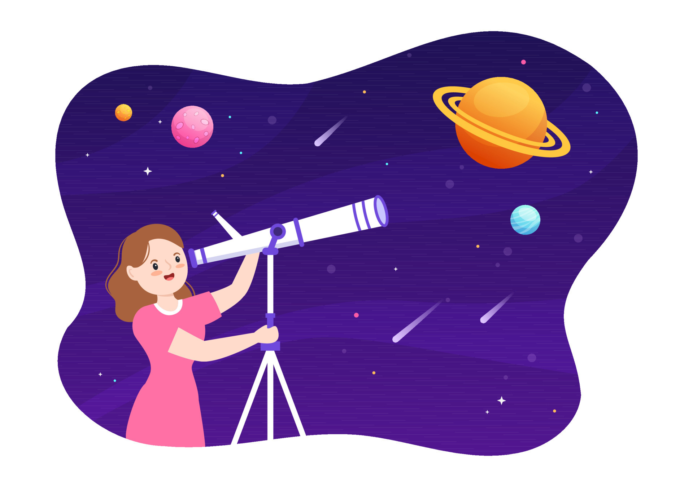

Astronomia é a ciência que estuda os corpos celestes e o Universo, ou seja, os planetas, estrelas, cometas, asteroides, nebulosas, galáxias, entre outros. Conceitos e teorias importantes, como a do Big Bang (sobre a criação do Universo) e da Teoria Nebular (criação do Sistema Solar), foram construídas dessa forma. A Astronomia é uma das ciências mais antigas, pois a prática de observar o céu tem milhares de anos. Foi a partir da observação de fenômenos celestes que o homem conseguiu organizar a passagem do tempo e prever eventos naturais.
